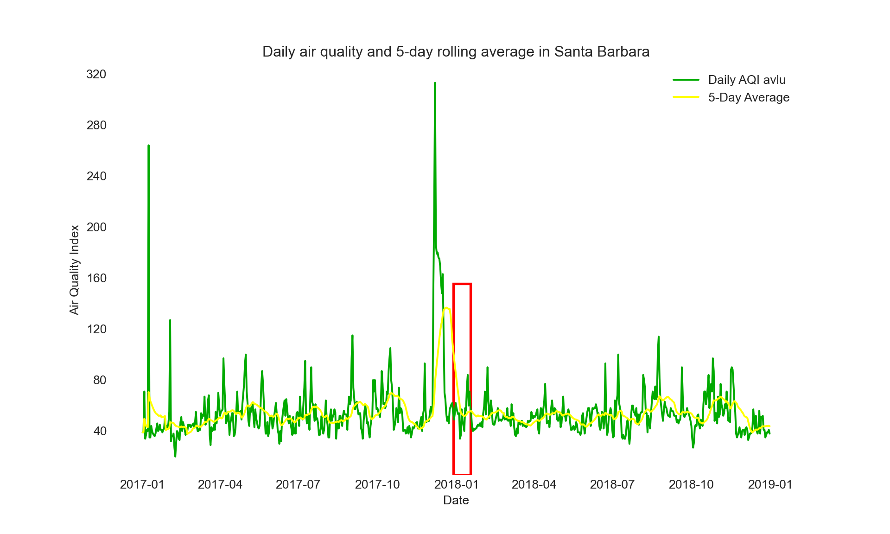

Detection of Forest fire using false color Image analysis
Python
Geospatial
Author
Sujan Bhattarai
Published
December 15, 2023
Introduction: False Color Image
A false color image involves assigning colors to represent features not easily visible in the natural spectrum. In environmental studies, false color imagery plays a crucial role in highlighting and distinguishing various environmental elements, such as the health of vegetation, changes in land cover, and levels of pollution. By associating different attributes with distinct colors, false color images offer valuable information for assessing and monitoring environmental conditions. They aid in the analysis of ecosystems, climate patterns, and overall environmental health. The provided image belwo illustrates how false color can be applied to enhance the detection of changes. The image in the right is false color that highlights spherules in rocks in Mars. further information about the image
Figure 1: Stone mountain rock outcrop in true and false colour. Image credit: NASA/JPL
In this brief analysis, false color imagery is employed to identify the Thomas fire event in Santa Barbara County. The process involves retrieving raster data from open data sources, specifically from Microsoft Planetary Computer and California government websites. The data sources are their citations are listed in Data Citation heading.
For this blog, I opted to utilize the base environment of Python3 to avoid the need for downloading resource-intensive packages for the analysis, which could potentially consume significant memory resources. Additionally, I streamlined the installation process by employing the pip installer for all the required packages, including geopandas and rioxarray.
Code
#load all required librariesimport osimport numpy as npimport pandas as pdimport matplotlib.pyplot as pltimport matplotlib.patches as mpatchesimport xarray as xrimport rioxarray as rioxrimport geopandas as gpdfrom rasterio.features import rasterizeimport matplotlib.dates as mdatesfrom matplotlib.patches import Rectanglefrom matplotlib.widgets import Buttonfrom tabulate import tabulate
Data Citation
The downloaded raster image(in the chunk below) stores five bands of wavelengths : red, green, blue, near infrared, and shortwave. The near infrared, shortwave and red bands will be used in detection of fire plumes. Likewise, the California fire information is downloaded from California state goverment website, which stores information about fire event around california, Santa Barbara. The links to data sources are:
##set the directory for the datadata_path = os.path.join(os.getcwd(), "data/landsat8-2018-01-26-sb-simplified.nc")landsat = rioxr.open_rasterio(data_path)# squeeze the band dimension, as it creates problem in plotting,# also create dublicate, original unchanged might be requiredlandsat1 = landsat.squeeze(['band'])fire = gpd.read_file("data/California_Fire_Perimeters_2017/California_Fire_Perimeters_2017.shp")fire.describe()
The three bands(NIR, SWIR, RED) are filtered for areas around Thomas fire area. The raster is adjusted with shapes and extent with another shape file, since shape file is used to extract area of interest(Thomas fire area) from whole california map. The false color bands are then plotted for visualization purpose.
Data Wrangling
The first step in Data wrangling involves subsetting the data only for the area of the interest. Then, the CRS of both datasets is matched, or converted as per CRS of other dataset. Converting CRS is important for accurate merging of the two raste files. Next, the grid cells of netcdf data is converted to array representing list of lists(). The format of the NetCDF data-array looks as the ouput below.
Code
#select only thomas fire thomas_fire = fire[fire['FIRE_NAME'] =='THOMAS'] #check if value is only for Thomas firefor index, name in thomas_fire['FIRE_NAME'].items():if name !='THOMAS':raise('DOUBLE CHECK')
Code
#change the crs to match with landsat thomas_fire = thomas_fire.to_crs(landsat.rio.crs)#validate if they are equalthomas_fire.crs == landsat.rio.crs
True
Code
#also save the false color image of the landsat, it will be required in plottingfalse_color_data = landsat1[['swir22', 'nir08', 'red']].to_array()print(false_color_data[1])
The dataset is ready for visualization. Since, it’s an array object, imshow function is used. The output image is the raster image and shows different colors for areas where fire occured.
Code
# Data is all set to plotfig, ax = plt.subplots(figsize=(5, 5))false_color_data.plot.imshow(ax=ax, cmap='inferno', robust =True)ak_patch = mpatches.Patch(color='lightgreen', alpha =0.8, label='False color image for fire predictions')thomas_fire.plot(ax=ax, edgecolor ='red', color='yellow', alpha =0.3)kodiak_patch = mpatches.Patch(color='yellow', alpha =0.5, label='Fire occured')ax.legend(handles = [ak_patch, kodiak_patch], frameon=False, loc='lower left', labelcolor ='white' ) #create legendax.get_xaxis().set_visible(False) #remove xaxis labelax.get_yaxis().set_visible(False) #remove yaxis label
The graph above displays the false color image of the Thomas fire. Now, examine the air quality during, before, and after the Thomas fire to spot any notable changes. You can retrieve the tabular daily air quality data for the region from the Data Citation section. To carry out this assessment, download the data for both 2017 and 2018.
Prior to moving forward, it’s crucial to acknowledge that the new air quality data needs some cleaning. Issues like spaces in names, inconsistent column names, and the inclusion of data for all counties in California need attention. Therefore, execute the following cleaning procedures:
Remove spaces in names.
Standardize column names to lowercase.
Combine data for 2017 and 2018.
Replace spaces in column names with underscores.
Convert the date column to a datetime format recognized by Python.
Once these cleaning steps are completed, you’ll have a well-prepared dataset for further analysis of air quality changes in relation to the Thomas fire event.
Data Wrangling (Part B)
Code
##air quality index##webscrape the two dataset based on the guidelinesaqi_17 = pd.read_csv("https://aqs.epa.gov/aqsweb/airdata/daily_aqi_by_county_2017.zip")aqi_18 = pd.read_csv("https://aqs.epa.gov/aqsweb/airdata/daily_aqi_by_county_2018.zip")##concatnate the two datasets, this will be useful in plottingaqi = pd.concat([aqi_17, aqi_18])#check if both 2017 and 2018 data is presentprint(tabulate(aqi[['Date']].head(2), headers='keys', tablefmt='pretty'))
# re-assign the column names - .str.lower() makes them lower caseaqi.columns = aqi.columns.str.lower()# re-assign the column names again - .str.replace(' ','_') replaces the space for _aqi.columns = aqi.columns.str.replace(' ','_')# Select data from Santa Barbara countyaqi_sb = aqi[aqi['county_name'] =='Santa Barbara']# Remove specified columnscol_remove = ['state_name', 'county_name', 'state_code', 'county_code']aqi_sb = aqi_sb.drop(columns=col_remove)##date is in object format, and not in standard datetime python object# Convert 'Date' column to datetimeaqi_sb['date'] = pd.to_datetime(aqi_sb['date'])
After the data is cleaned, perform the smoothing by calculating moving average for the air quality value. Rolling average with period of 20D offers general average for 20Days. Any other values can be used other than 20.
Code
# Set 'Date' as the indexaqi_sb.set_index('date', inplace=True)# DataFrame with the Date column as the indexaqi_sb['five_day_average'] = aqi_sb.aqi.rolling('20D').mean()
Data Visualization (Part B)
Finally, create a graph to show how the air quality changed over two years. You’ll notice a significant increase at a specific time corresponding to the Thomas fire. The line graph, combined with the average value over a 20-day period, provides sufficient evidence to demonstrate the impact of the Thomas fire on air quality in the Santa Barbara area.
Code
# set the plot styleplt.style.use('seaborn-darkgrid')# Create a white backgroundfig, ax = plt.subplots(figsize=(10, 6))fig.patch.set_facecolor('white')ax.set_facecolor('white')# Plot the dataax.plot(aqi_sb.index, aqi_sb['aqi'], label='Daily AQI avlu', color='#00AA00')ax.plot(aqi_sb.index, aqi_sb['five_day_average'], label='5-Day Average', color='#FFFF00')# Set the title and labelsplt.title('Daily air quality and 5-day rolling average in Santa Barbara')plt.xlabel('Date')plt.ylabel('Air Quality Index')plt.legend()# Add grid for better readabilityax.grid(True, linestyle='--', alpha=0.7)# Customize y-axis ticksax.yaxis.set_major_locator(plt.MaxNLocator(integer=True))# Set the axis ticks to be outside the plotax.tick_params(axis='both', direction='out')# Remove top and right spinesax.spines['top'].set_visible(False)ax.spines['right'].set_visible(False)##add rectangle zoom# Add a rectangular zoom boxzoom_date ='2017-12'# Replace with your desired zoom daterect = Rectangle((mdates.datestr2num(zoom_date), ax.get_ylim()[0]),20, 150, linewidth=2, edgecolor='r', facecolor='none') # Adjust rectangle size as neededax.add_patch(rect)plt.show()

Conclusion
In conclusion, this exploration into the impact of the Thomas fire on the Santa Barbara area has uncovered crucial insights through the combination of false color imagery and air quality data analysis. The false color image provided a visual representation of the fire event, while the examination of air quality data from 2017 and 2018 allowed us to discern notable changes.
Upon downloading and cleaning the air quality data, aligning coordinate reference systems, and converting netCDF grid cells into a structured array, a comprehensive dataset emerged. The subsequent plotting of air quality changes over the two-year period, along with a discernible spike corresponding to the Thomas fire, painted a compelling narrative of the environmental impact.
The utilization of line graphs, coupled with a 20-day rolling average, served as effective tools to illustrate the temporal fluctuations in air quality. The identified spike at the time of the Thomas fire provides clear evidence of the event’s influence on the region’s air quality. This integrated approach, combining imagery, data analysis, and visualization, enhances our understanding of the broader environmental implications of such natural disasters and underscores the importance of comprehensive monitoring and analysis in safeguarding environmental well-being.